【０】ここに書いてあること
【１】導入前の準備
【２】個々のマクロの導入
【３】一番原始的なマクロの実行
【４】マクロ登録
【５】ショートカットキーへの登録
【６】ツールバーからマクロ起動
【７】ユーザーメニューからマクロ起動
【８】サンプルマクロ
秀丸エディタの大きな魅力の1つに「秀丸マクロ」の存在があげられます。マクロというのは一種のプログラムで、これを利用することにより秀丸エディタ上で行う作業を自動化したり秀丸エディタの機能を拡張したりと、秀丸エディタをより便利に使うことができます。マクロは自分で作ってもよいし（実際、単純なマクロを組むのはそれほど難しいことではありません）、人の作ったものをなんらかの方法で入手してもいいでしょう(注1)。なお、手元に適当なマクロがない人は、【８】にサンプルのマクロをいくつか用意しておきましたので、それを元に自分でマクロファイルを作っていろいろ実行させてみましょう。(^_^)
秀丸エディタのマクロの正体は、秀丸エディタのマクロ言語が記述された「MAC」という拡張子のついたテキストファイルです。以下これをマクロファイルと呼びます。ここでは、マクロ（マクロファイル）を入手してから、それを実際に利用するまでの手順を説明します。
例えば、以下の場所には、多くの秀丸エディタマクロが登録されています。
まず、このマクロファイルを格納するためのフォルダを作らなければなりません。
Windows Vista以降の場合、デフォルトではユーザーフォルダにある、アプリケーションデータフォルダに設定されています。
例) C:\Users\ユーザー名\AppData\Roaming\Hidemaruo\Hidemaru\Macroストアアプリ版の場合、マクロフォルダはドキュメントフォルダに設定されます。
例) %USERPROFILE%\Documents\Hidemaru\StoreAppMacroマクロフォルダはユーザーフォルダでなくてもかまいませんが、書き込み可能なフォルダを指定してください。フォルダの名前は任意に指定可能です。(注2)
デフォルト以外の場所にマクロフォルダを作成した場合には、設定を変更する必要があります。メニューの「その他 → 動作環境」で動作環境を開き、「環境」にある「パス」の「マクロファイル用のフォルダ」で設定します。

タイプミスをするといけないので[参照…]ボタンを押して、先ほど作成したフォルダを選択してください。 <OK>を選んで設定を終了します。<キャンセル>で終了すると、設定を変更したことにはならないので注意して下さい。
これで作業は終了です。この作業は最初に１回だけやる必要があります。マクロ用フォルダの名前や場所を変えない限り、この作業をやりなおす必要はありません。
ストアアプリ版では「環境変数」を含むパスが設定されますが、デスクトップ版でもパスに「環境変数」を含めることは可能です。(Ver.8.40以降)
デフォルト設定の場合、環境変数を使った場合は、以下のようになります。
例) %APPDATA%\Hidemaruo\Hidemaru\Macro「環境変数」を含める利点は、「設定内容の保存/復元」を使い保存し、別環境で復元するという作業がやりやすいことです。直接フルパスで記入した場合、Windowsのログオンユーザー名なども含め同じでない場合は、必ず設定の変更が必要になります。環境変数を使えば、ログオンユーザー名などは環境変数に含まれるため、設定の変更は不要です。
(環境変数が使えるのは、マクロ用と設定用のフォルダ指定です。すべてのパス設定で環境変数が使えるわけではない為、何も設定変更しなくても良いというわけではありません)
Windows Vista以降のOSは、通常の権限では"OSに保護された領域"にファイルの書き込みが出来ません(管理者権限へ昇格が必要)。秀丸エディタのデフォルトインストール先は、"C:\Program Files\Hidemaru"ですが、 "C:\Program Files"以下は、"OSに保護された領域"となるので、マクロフォルダの作成には向いていません。 (64bit OSで、32bit版秀丸エディタを使っている場合、インストール先は"C:\Program Files(x86)\Hidemaru"になり、ここも保護されたフォルダになります)
デフォルトマクロフォルダが指定されているユーザーフォルダは、エクスプローラでも見えないような設定になっています(OS側の設定)。見えるようにするにはOSの設定を変更する必要があります。 (「フォルダーオプション」の「隠しファイル、隠しフォルダー、および隠しドライブを表示する」を選ぶ)
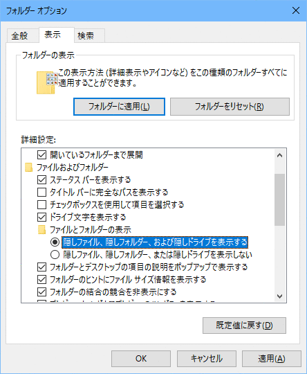
OS側の設定を変更したくない場合は、ユーザーフォルダ以外にマクロフォルダを作成する必要があります。
秀丸エディタの仕様ではマクロ用のフォルダは必ずしも準備しなくてもいいことになっていますが、 Windows Vista以降のOSでは、必ず指定するようにしてください。空欄だと、秀丸エディタ本体と同じ場所を指定した事になってしまいます。
マクロファイルは通常、マクロ用フォルダに置きます。
データライブラリに登録されているマクロの場合は LHAやZIP形式で圧縮されている場合がほとんどですから、マクロ用フォルダに展開（解凍）します。またドキュメント以外の添付ファイルがある場合、それらの中にはマクロの実行に必要なものが含まれている可能性があります。ドキュメント等をよく読んでその指示に従って下さい。
「とりあえず実行してみる」には、メニューから「マクロ→マクロ実行」を選びます。
ダイアログの中に、【１】でマクロ用フォルダに含まれるマクロファイルのリストが表示されます。その中から実行したいマクロファイルを選び、ファイル名のテキストボックスの中にそのファイル名が表示されたのを確認してから<OK>をクリックします。これで、そのマクロが実行されます。
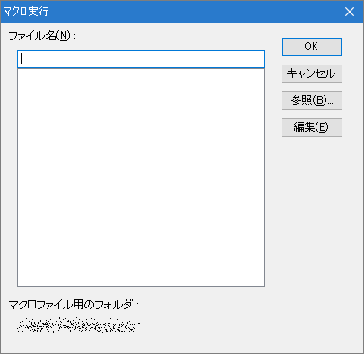
マクロ実行ダイアログは変更可能です。「動作環境 − 環境 − 高度な環境 − マクロ実行ダイアログ」で設定します。

「参照ダイアログ」の場合、ファイル選択ダイアログが開きます。マクロをフォルダで分類しているような場合には、こちらのダイアログの方が便利でしょう。
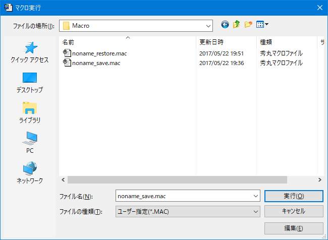
【３】の方法は、マクロを実行する度にリストから選ばなければならないので面倒です。またマクロファイルが多くなってくると、ファイル名だけではどれが何のマクロか分からなくなってきます。そこで、比較的頻繁に使用するようなマクロは「マクロ登録」してしまいましょう。マクロ登録すると、プルダウンメニューからマクロを実行できるようになるほか、
なども利用できるようになります。
まず「マクロ→マクロ登録」で「マクロ登録」ダイアログを呼び出します。マクロ登録では「マクロ1」から「マクロ80」まで80個のマクロを登録できます。これらは「1〜10」「11〜20」という風に10個づつのグループとなっています。ダイアログの左側にある「対象」で、これらを切り替えることができます。
「1〜10」グループに登録したマクロは、「マクロ」のプルダウンメニューの中にタイトルが表示され、そこから直接起動できます。「11〜20」グループ以降に登録したものは、プルダウンメニューの中にグループ名が表示されます。グループ名を選択すると、該当するグループに登録されたマクロのタイトルのメニューが表示され、そこからマクロを起動できます。
メニューの「マクロ」を開いたところ
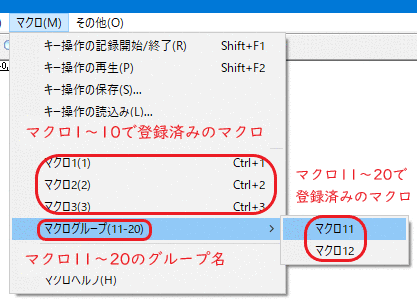
マクロ登録ダイアログは、バージョンにより異なります。
Ver.8.79からは、ダイアログが変更されています。
追加したい場所を選択後、画面下段にあるタイトルとファイル名の入力欄で、各項目を入力します。
ファイル名右側の「＞」ボタンでリストが出ます。「…」ボタンで、ファイル参照ダイアログを使って、マクロファイルを選択できます。
エクスプローラからのドロップにも対応していて、マクロをエクスプローラから登録したい箇所にドロップすれば、タイトルとファイル名が設定されます。タイトルはファイル名から拡張子を削除したものが自動にセットされるので、必要に応じて変更してください。
右下の「開く」ボタンを押すと、エクスプローラでマクロフォルダが開きます。
ドロップ中に、グループの切替は出来ないので、あらかじめ登録したいグループ選択しておいてください。とりあえずドロップし、移動したい項目を選択後、「上へ」、「下へ」のボタンで、移動する事も出来ます。 (「上へ」、「下へ」のボタンは、グループを超えて移動できます)
Ver.8.79以降のマクロ登録ダイアログ(左下の「モード」から旧ダイアログにも変更可能です。キー割り当ても表示できます)
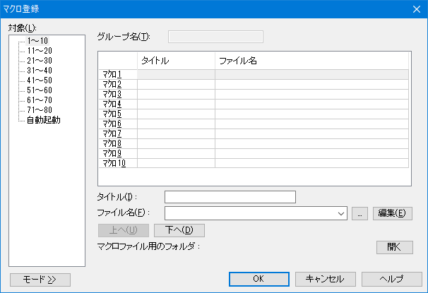
マクロ登録の基本は「タイトル」と「ファイル名」の指定です。まず「ファイル名」の欄に、セットアップしたマクロファイルの名前を入力します。右側の「＞」ボタンでリストが出ます。「…」ボタンで、ファイル参照ダイアログを使って、マクロファイルを選択できます。
次に、任意の「タイトル名」を入力します。このタイトルがプルダウンメニュー等に表示されますので、マクロの機能がすぐにわかるような名前を付けましょう。
Ver.8.77までの画面
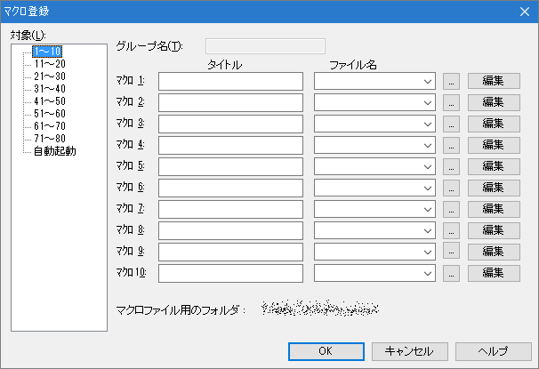
グループが「１〜１０」以外の場合は上にある「グループ名」の欄にも任意の名前を入力して下さい(注3)。作業が終わったらをクリックしてマクロ登録を終了します。
マクロ登録後、プルダウンメニューを見ると、「マクロ1」から「マクロ9」に登録したものは、それぞれ右側に「Ctrl+1」などと表示されています。これは「文章を入力・編集しているときに、[CTRL]を押しながら[1]を押すと、マクロ1が実行される」という意味です。つまり「マクロ1」から「マクロ9」に登録したマクロは、（何番に何のマクロが登録されているかを憶えてさえいれば）実はプルダウンメニューを表示させなくても呼び出すことができるのです(注4)。このような特定のキーの組み合わせによって、メニューなどを介さずに直接コマンドなどを実行する機能（およびそのキーの組み合わせ）のことを一般に「ショートカットキー」といいます。
秀丸エディタのショートカットキーは「キー割り当て」と呼ばれていますが、かなり高い自由度でカスタマイズできるようになっており、「マクロ80」までに登録したマクロは任意の（といってももちろんある程度の制限はありますが）ショートカットキーに割り付けることができます。ここでは、マクロ登録したマクロをショートカットキーに割り付ける方法を説明します。
まず「その他→キー割り当て」でキー割り当てのダイアログを呼び出します。
秀丸エディタ Ver.8.90以降の場合 (Ver.8.90〜)「キーに対するコマンド」の場合


「キーの一覧」には、割り当てることのできる「キー」と現在割り当てている「コマンド」の一覧が表示されます。「キーの一覧」の内容は、その下の「Shift/Ctrl/Alt」と、右にある「キー割り当て拡張」のチェックとの組み合わせで変化します。
「キーの一覧」から割り当てたいキーを選択すると、「割り当てるコマンド」で該当するコマンドが選択されます。
「割り当てるコマンド」に表示されたコマンドをクリックして選択することにより、「キーの一覧」で選択したキーに割り当てるコマンドを変更(あるいは新規に設定)できます。(注5)
検索ボックス右側の「＞」で表示されるリストから「メニュー/マクロ」を選ぶと、項目の絞り込みが行われ、メニューとマクロのみ表示させることができます
秀丸エディタ Ver.8.90より前の場合 (〜Ver.8.89)
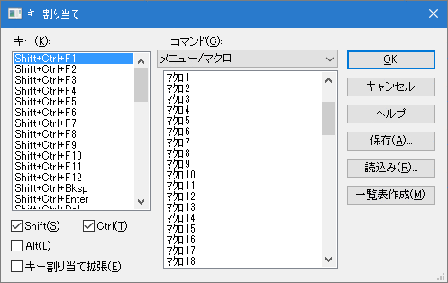
左側の「キー」のリストには割り当てることのできるキー(すでにコマンドが割り当てられているキーを含む)の一覧が表示されます。このキーリストの内容は、その下の「Shift/Ctrl/Alt/キー割り当て拡張」のチェックとの組み合わせで変化します。
キーリストの中からあるキーの組み合わせを選ぶ(クリックする)と、そのキーに登録されているコマンドが、中央の「コマンド」のリストの中で選択表示されます。「(なし)」が選択表示されている場合、そのキーにはまだコマンドが割り当てられていないということです。コマンド系列ボックス右側の「＞」で表示されるリストからコマンド系列を選び、その下のコマンドリストに表示されたコマンドの1つをクリックして選択表示させることにより、左側で指示したキーに割り当てるコマンドを変更(あるいは新規に設定)できます。(注5)
マクロを設定する場合は、キー選択後コマンドを選択する際に「メニュー/マクロ」の系列を選び、コマンドリスト中の「マクロ1」から「マクロ80」の中から割り当てたいものをクリックします。
例えば「[Ctrl]と[Shift]を押しながら[C]→マクロ15（に登録したマクロ） を実行」と設定したい場合、まず右下の
をチェック(クリックして☐の中に☑がついた状態にする)します。
次にキーリストをスクロールさせて「Shift+Ctrl+C」をクリックして選択状態にして、「メニュー/マクロ」の系列を選んでから、コマンドリストをスクロールさせて「マクロ15:×××××」をクリックすることになります。
「OK」をクリックして終了すると、登録したキー割り当てが有効になります。
【４】で登録したマクロに限って、ツールバーのアイコンから起動できます。
まず「その他→動作環境→ウィンドウ」の「☐ツールバー」の項目がチェックされていなかったら、これをチェックします。さらに[詳細]ボタンをクリックし、「ツールバー詳細」のダイアログを呼び出します。右側のボックスでコマンド系列に「メニュー/マクロ系」を指定すると、その下のリストに「マクロ1」から「マクロ10」までの（数字のデザインの）アイコンが表示されます。(11〜80まではアイコンがありません) これらは「マクロ登録」で「マクロ1」〜「マクロ80」へ割り当てたマクロに対応していますから、適宜選んで中央の[追加]ボタンをクリックすると、左側のツールバーリストの最後尾に追加されます。アイコンの並びは「一つ上に」 「一つ下に」ボタンで調整します。作業が終わったら<OK>ボタンで終了します。
これで、メニューの下のツールバーの数字のアイコンから直接マクロを起動できるようになります。
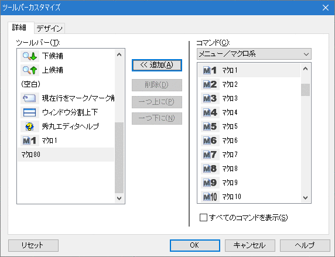
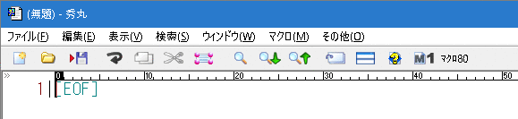
秀丸エディタには「メニュー1」から「メニュー8」および「選択中右ボタン」という９つのユーザーメニュー(ユーザーが自由に編集できるメニュー)が用意されています。ここに「マクロ1」から「マクロ80」までのマクロを登録できます。これを利用するためには、「メニューの編集」と「メニューのキー割り当て」の２段階の準備が必要になります。
まずメニューの編集をします。「その他→メニュー編集」で「メニューの編集」のダイアログを呼び出し、「ユーザーメニュー」のタブを選択します。「メニュー」欄で編集するメニューを選択すると、そのメニューの現在の内容が「内容」のリストに表示されます。
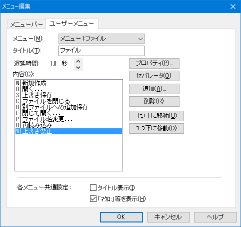
[追加…]ボタンで「追加」ダイアログを呼び出します。
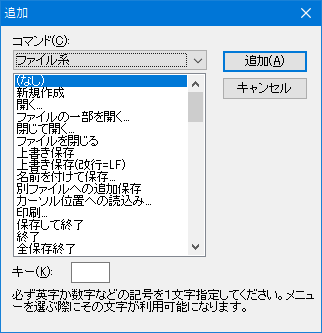
コマンド系列に「メニュー/マクロ」を指定すると、下のリストに「マクロ1」から「マクロ80」までが表示されます(注6)。メニューに追加したいものをクリックして選択表示させ、「キー」欄に半角英数字１文字を入力します（この半角英数字はメニュー内での一種のショートカットキーになります）。ここで[追加]をクリックすると、「ユーザーメニューの設定」ダイアログに戻るので、「内容」リストの末尾に先ほど指定したマクロが追加されていることを確認して下さい。必要なら並べ替え等をし、[閉じる]で終了します。これでメニューの編集は終わりです。
「メニュー1」から「メニュー8」の場合、次にメニューのキー割り当てをします(注7)。要領は【５】とほぼ同じです。違うのはコマンドリストから選ぶのが「マクロ」ではなく「メニュー」であるということだけです。
これで、割り当てられたショートカットキーによりユーザーメニューが表示され、その中からマクロを実行できるようになります。
手元に適当なマクロファイルがない方は、次の要領でマクロファイルを作って動かしてみましょう。ただし【１】の導入前の準備は済ませておいて下さい。
「カーソル位置に現在日時を挿入するマクロ」
保存時のファイル名は QA_SMPL1.MAC としてください。
//---ここから
//QA_SMPL1.MAC
insert date + " " + time;
endmacro;
//---ここまで「編集中のテキストの末尾に『自分の名前』をの行を挿入するマクロ」
保存時のファイル名は QA_SMPL2.MAC としてください。
「自分の名前」のところは任意の文字列（ただし「vや「"」を含まない）に置き換えることができます。
//---ここから
//QA_SMPL2.MAC
gofileend;
insert "\n" + "自分の名前" + "\n";
endmacro;
//---ここまで「改行のみの行が連続していたら１行に置換するマクロ」
保存時のファイル名は QA_SMPL3.MAC としてください。
//---ここから
//QA_SMPL3.MAC
gofileend;
replaceup "^\\n\\n+", "\n", regular;
while (result) findup;
endmacro;
//---ここまでこのマクロの意味の詳細は、第IV部〜テキスト編集を極める！！正規表現について の【５】 (補足)秀丸エディタ上での複数行にまたがる検索についてを参照してください。
「空白（全角スペース、半角スペース、タブ）のみからなる行を改行のみの行に置換するマクロ」
保存時のファイル名は QA_SMPL4.MAC としてください。
//---ここから
//QA_SMPL4.MAC
replaceall "^[ \\t]+$","", regular;
endmacro;
//---ここまで※このマニュアルは秀丸エディタ Ver.3.08 の仕様を元に書かれています。秀丸エディタのバージョンによっては、必ずしもここに書かれている内容の通りとは限りません。